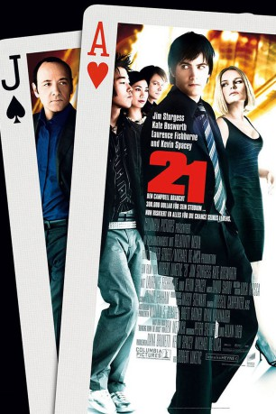

#1003 21
 
 IMDB-Wertung: 6.8 / 10
IMDB-Wertung: 6.8 / 10  Metascore: 48
Metascore: 48 
Aufgrund seiner guten Ergebnisse als Mathematikstudent am renommierten MIT, erhält Ben Campbell ein verlockendes Angebot. Sein Mathematikprofessor Mickey Rosa will Ben in sein sechsköpfiges Black Jack Team aufnehmen, das er im Kartenzählen professionell ausbildet. Denn Rosa hat eine Formel entwickelt, mit der es möglich ist, alle Las Vegas Casinos um Millionen Dollar zu erleichtern. Nach einigen erfolgreichen Runden Black Jack schöpft jedoch auch die Security der Casinos Verdacht und nimmt die Spur von Rosa und seinem Expertenteam auf.
Jahr: 2008
Dauer: 123 Minuten
FSK: 12
Land: USA Studio: Columbia PicturesTonspuren:
Untertitel: Deutsch,
Auflösung: 720p (1280x528) Größe: 4485 MB
Genre: Krimi, Drama, Geschichte, Thriller
Regisseur:  Robert Luketic
Robert Luketic
Drehbuch: Peter Steinfeld, Allan Loeb, Ben Mezrich
Soundtrack: David Sardy
Darsteller:
 Jim Sturgess als Ben
Jim Sturgess als Ben Kevin Spacey als Micky Rosa
Kevin Spacey als Micky Rosa Kate Bosworth als Jill
Kate Bosworth als Jill Aaron Yoo als Choi
Aaron Yoo als Choi Liza Lapira als Kianna
Liza Lapira als Kianna Jacob Pitts als Fisher
Jacob Pitts als Fisher Laurence Fishburne als Cole Williams
Laurence Fishburne als Cole Williams Jack McGee als Terry
Jack McGee als Terry Josh Gad als Miles
Josh Gad als Miles- Sam Golzari als Cam
 Frank Patton als Planet Hollywood Floor Manager
Frank Patton als Planet Hollywood Floor Manager- Ernell Manabat als Red Rock Doorman
- Anthony DiMaria als Hard Rock Doorman
 Christopher Michael Holley als Philosophical Gambler
Christopher Michael Holley als Philosophical Gambler- Terasa Livingstone als Russian's Girlfriend
- Kieu Chinh als Chinese Woman
- Alice Lo als Chinese Woman
 Spencer Garrett als Stemple
Spencer Garrett als Stemple- Celeste Oliva als Airport Screener
- Finise Avery als Student , uncredited
- Fethi Bendida als Student , uncredited
 Eric Bruno Borgman als Strip Club Patron , uncredited
Eric Bruno Borgman als Strip Club Patron , uncredited- Fritz Ceriales als MIT Student , uncredited
 Nicole Chauvet als Upscale Gambler , uncredited
Nicole Chauvet als Upscale Gambler , uncredited Chemi Che-Mponda als Hotel Maid , uncredited
Chemi Che-Mponda als Hotel Maid , uncredited Sean Collins als MR Tillman Shopper , uncredited
Sean Collins als MR Tillman Shopper , uncredited Jeffrey Corazzini als Nightclub Patron , uncredited
Jeffrey Corazzini als Nightclub Patron , uncredited- Katie Curley als Audience Member Robotics Competition , uncredited
- Sal DiMino als Train Passenger #1 , uncredited
- Will Dragan als Bar Patron , uncredited
- Benjamin Fisher als Basketball Player , uncredited
- Paige Flannery als Mile's Sister , uncredited
 Steve Flynn als Gambler , uncredited
Steve Flynn als Gambler , uncredited- Thomas Michael Flynn als MIT Student , uncredited
- Trudi Goodman als Airport Traveler , uncredited
- Harley Harrison als MIT Student , uncredited
- Lyralen Kaye als College Mom , uncredited
- Yulia Lilith Maceo als High-Roller , uncredited
- Rebecca Marshall als Hot Girl , uncredited
- Andrew J McGuinness als College Student , uncredited
- Josh Mervis als MIT Student , uncredited
 Americo Presciutti als Croupier , uncredited
Americo Presciutti als Croupier , uncredited- Eric Rollins als M.I.T. Student , uncredited
- Pedro Sabino als Security Guard , uncredited
- Ben Samuels als Student , uncredited
- Jonathan Sawicki als MIT Student , uncredited
- Jessi Shuttleworth als Friend , uncredited
- Billy Silvia als Casino Security Team , uncredited
 Joe Sobalo Jr. als MIT Alumni Party Bartender , uncredited
Joe Sobalo Jr. als MIT Alumni Party Bartender , uncredited- John Wayland Somers als Bar Patron , uncredited
Datei: X:\2008(A-F)\21 (2008, FSK12, 1280x528).mkv seit 05.05.2015
Festplatte: HD 2007(A-Z)-2008(A-F)
 Es gibt insgesamt 66 Filme in der Gruppe '2008(A-F)'
Es gibt insgesamt 66 Filme in der Gruppe '2008(A-F)'